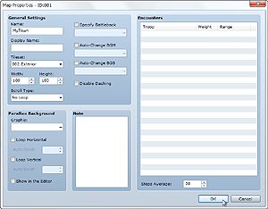
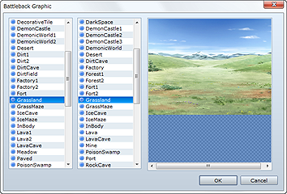
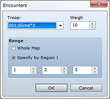
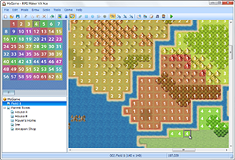

The Create Map dialog box appears when you create a new map or right-click a map and select Map Settings on the shortcut menu. This dialog box allows you to create and edit maps by setting their size, the tilesets they use, background music, conditions for encounters with enemy troops (battle occurrences) and other items that affect game play.

The name of the map you are creating/editing. This setting is only used by the editor and has no impact on game play.
Name displayed when the player moves on this map.
Size of the map. Specify a value between 17 and 500 for Width (horizontal) and 13 and 500 for Height (vertical). If you change a map's size so that it is smaller than before, the portion that will no longer fit will be deleted.
Specify the tileset to use for the map design.
Method for looping the map. Setting a loop connects the edges of the map together in a specified direction, allowing travel in an endless loop.
No loop processing.
Connects the top edge of the map to the bottom edge.
Connects the left edge of the map to the right edge.
Connects the map at its top and bottom edges and left and right edges.

When selected, this setting allows you to specify a combination of two graphics to display as a battle background when a battle occurs on this map.
When it is not selected, processing depends on the Mode of the tileset that was set for this map.
The battle background is automatically determined by the tile where the player is standing when the battle occurs.
The map and its effects will be used for the battle background.
When selected, this setting automatically starts playing background music (BGM)/background sounds (BGS) when the player is on this map. Specify the audio files you want to play.
When selected, this setting prevents the player from dashing on this map.
Graphic displayed on the blank area of the map. Click ... to open a window for specifying an image file.
Selecting Loop Horizontal or Loop Vertical scrolls the parallax background when the player moves in the specified direction. And specifying a value between -31 and 32 (except for 0) automatically scrolls the parallax background. A positive value scrolls left/up and a negative value right/down, and the greater the absolute value, the faster the scrolling speed.
Selecting Show in the Editor allows you to check the parallax background you set. Note that the display method may differ from that when actually playing the game.
Allows you to enter notes when creating a game. This setting is only used by the editor and has no impact on game play.

Specifies the enemy troop that the player will randomly encounter while moving on this map. This dialog box opens when you double-click on a blank area within the field, and you can specify the settings described below. Right-clicking on an enemy troop that has been added displays a shortcut menu in which you can copy, delete, and perform other such operations.
Specifies the enemy troop you want to set.
Specifies the priority (0 to 100) for this enemy troop to appear as a battle opponent. When multiple enemy troops are set, the larger this value, the higher the encounter rate for this enemy troop.
Specifically, the encounter rate is calculated using the percentage accounted for by the total value of the weights of the enemy troops that were set.
For example, let's say you set a weight of 9 for troop A, 7 for troop B, and 4 for troop C. In that case, the encounter rate for troop A would be 9/20 (9 + 7 + 4 = 20) or 45%. Similarly, the rates for B and C would be 7/20 (35%) and 4/20 (20%), respectively.
Specifies the area in which this enemy troop is encountered. To have the encounter occur regardless of the area, select Entire Map. To have the encounter occur in a specific area only, select Specify by Region ID and then specify up to three region IDs. The method for setting regions is described at the bottom of the page.
Specifies the frequency of encounters while moving on the map using a value that stands for the average number of steps taken (1 to 999 steps with each step representing traveling over one tile). Use a smaller value if you want to have monsters appear more frequently.

Regions as specified in the Encounter dialog box are areas indicating where enemy troop encounters occur. Each map can be divided into 63 regions.
To set one or more regions, click the Region button on the toolbar (or select Region on the Mode menu) to switch to editing mode. Next, click a region ID (1 through 63) in the upper left part of the window to select it, and then click on map view to set the selected region ID for the clicked position (tile). You can only set one region ID per tile.